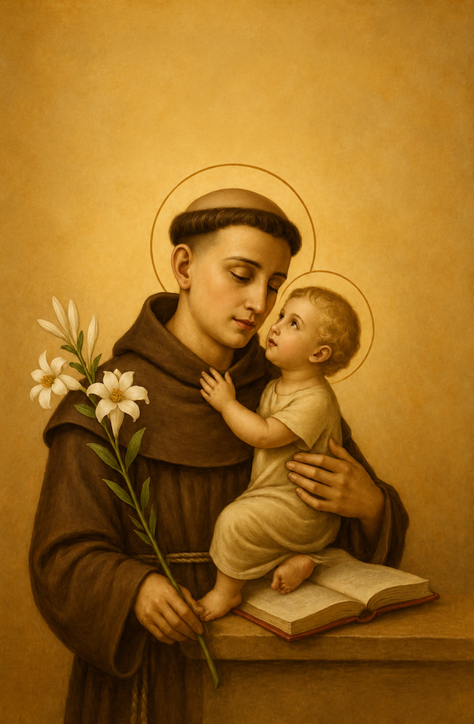

Prayer to Saint Anthony
O St. Anthony, gentlest of all Saints, your love of God and His creatures made you worthy, on this earth, to possess miraculous powers.
I implore you to intercede in my favor. Whisper my request to the ears of sweet Infant Jesus, who loved to be held in your arms... (express your request)
O St. Anthony, Saint of Miracles, whose heart was filled with compassion, please answer my prayer and I will be forever grateful.
Amen.